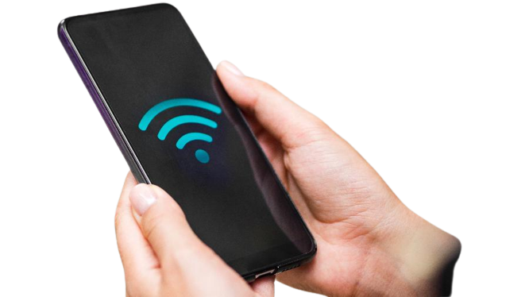

Lâmpada Câmera Yoosee
Informações do Video
A camera espiã, filma, grava, faz comunicação de voz, possuí sensor de presença, alarme e controle PTZ. A instalação é simples, você apenas tira sua lampada do bocal, e instala a lampada camera, porém a mesma deve estar próxima de uma rede de Wifi. Após a instalção, baixe em seu celular (IOS ou Android) o app YOOSEE e conecte com a lampada, pronto, esta feito a instalação.
Ferramentas para Instalação
Cartão de memória orginal

Àcesso a internet 2G

Celular com internet
